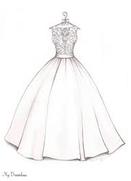
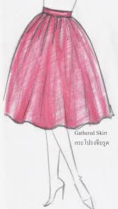
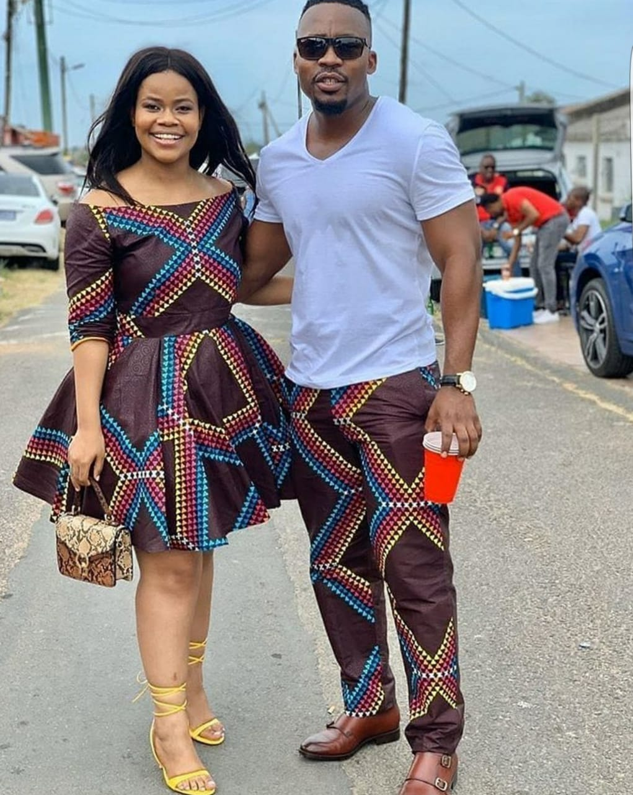

Full Suit Ksh.10000
His suit&Her gown Ksh.30000

Sketch Wedding Dress Ksh.18000

Sketch Skirt Ksh.500
Matching Family attire Ksh.20000

Matching Couple Attire Ksh.12000
Our shop is now opened for both ready made and customized clothes. Our Professional Tailors are always available to make you your designed cloth.
Welcome all to MY TAILOR.
When you picture a backpacker in your head, do you think of someone
dressed top to toe in tailor-made threads, or somebody in hippie pants, flip-flops, and a vest
that has stains for days.
Probably the latter, right? But it doesn’t have to be that way.
When you take your order through us,
it’s a great feeling to know that your money will buy you so many more great and cheap clothes.
But that’s not the only thing it can buy.
There are places all over the world that are hubs for cheap, high quality tailoring.
Whether you want to invest in a sharp suit for when you return home after a gap year,
a dress that you can picture in your head but can’t find on the rack, or simply some hippie pants
that fit better, try out these destinations for size.
Full Suit Ksh.10000
His suit&Her gown Ksh.30000
Sketch Wedding Dress Ksh.18000
Sketch Skirt Ksh.500
Matching Family attire Ksh.20000
Matching Couple Attire Ksh.12000
Our shop is now opened for both ready made and customized clothes. Our Professional Tailors are always available to make you your designed cloth.
Welcome all to MY TAILOR.
When you picture a backpacker in your head, do you think of someone
dressed top to toe in tailor-made threads, or somebody in hippie pants, flip-flops, and a vest
that has stains for days.
Probably the latter, right? But it doesn’t have to be that way.